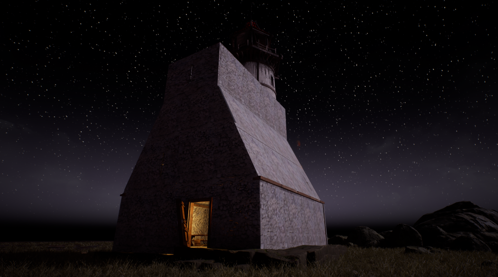
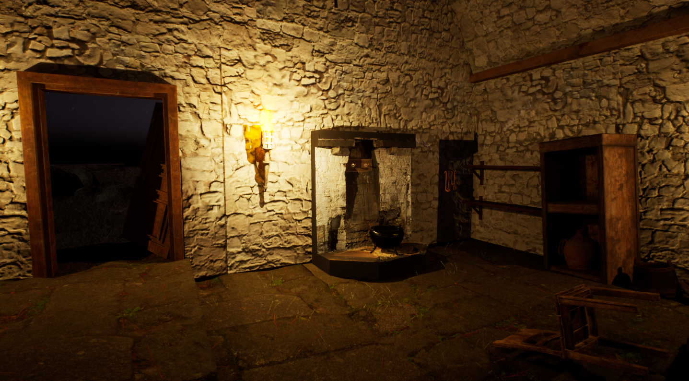
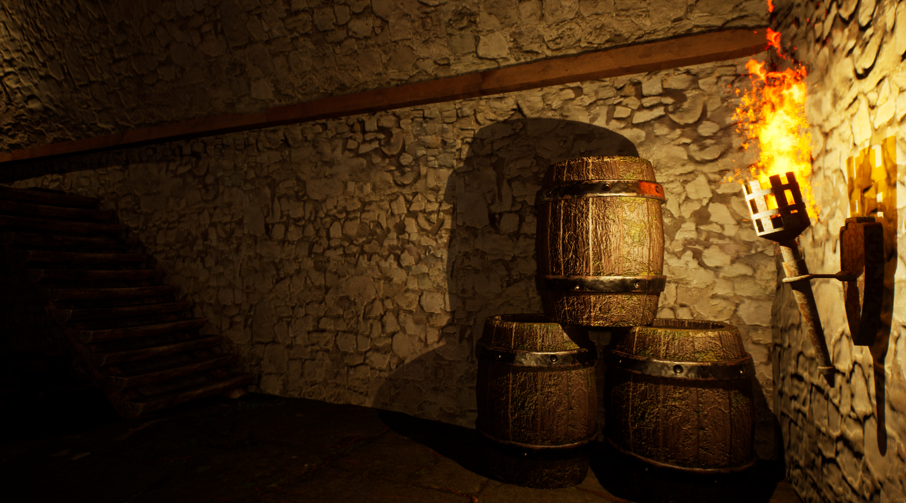
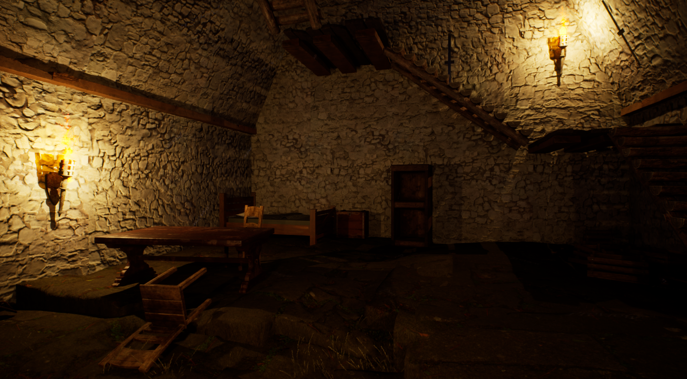
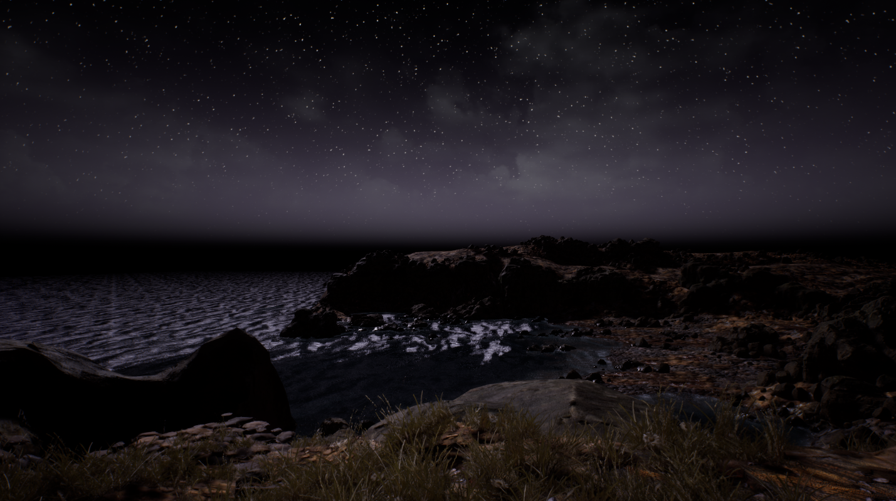

Le Feu de Léovard is a short narrative exploration game set inside a lighthouse that may not be as abandoned as it seems. I gave myself one month to design and develop a complete atmospheric experience focused on environmental storytelling, spatial sound design and vertical exploration.

After three days of development, the architectural base of the lighthouse is nearly complete. Interior and exterior volumes are established, forming the foundation for vertical progression.

A strong focus has been placed on spatial sound design. The wind dynamically reacts to player position — stronger outside, softer indoors. Torch flames emit localized ambient sound, reinforcing immersion and spatial awareness.

The next steps include finishing architectural details, unlocking access to the first floor and eventually the lighthouse head. Object-based interactions will allow players to uncover narrative clues.

Example of planned interaction:
"Strange… the bed looks newer than the rest of the furniture. It hasn’t suffered from the surrounding mold."

The final objective is to reveal a hidden chamber uncovering the truth: the lighthouse is secretly used by an occult sect to transmit mysterious signals.